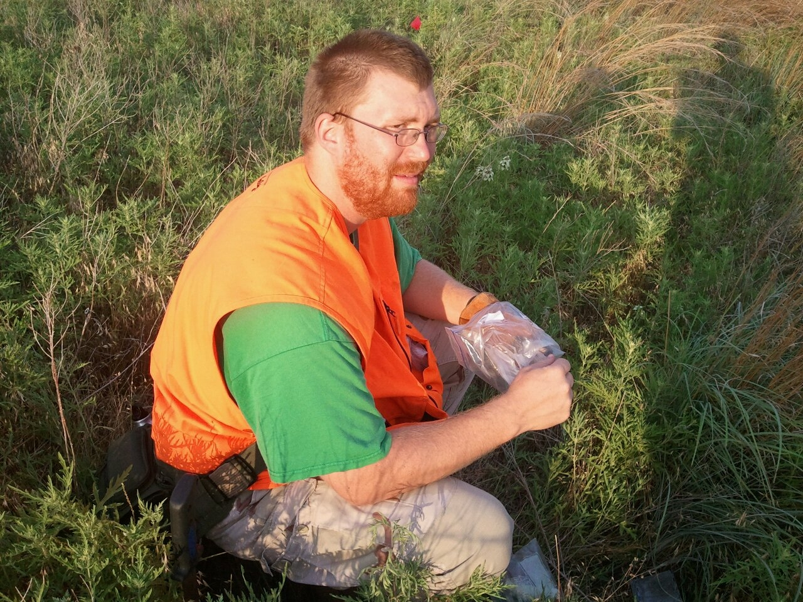
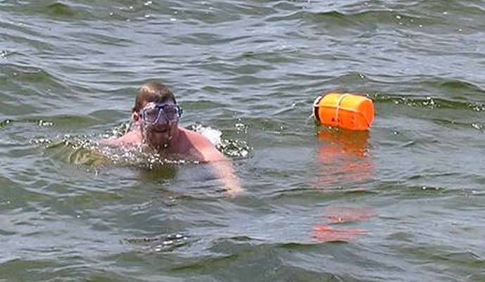
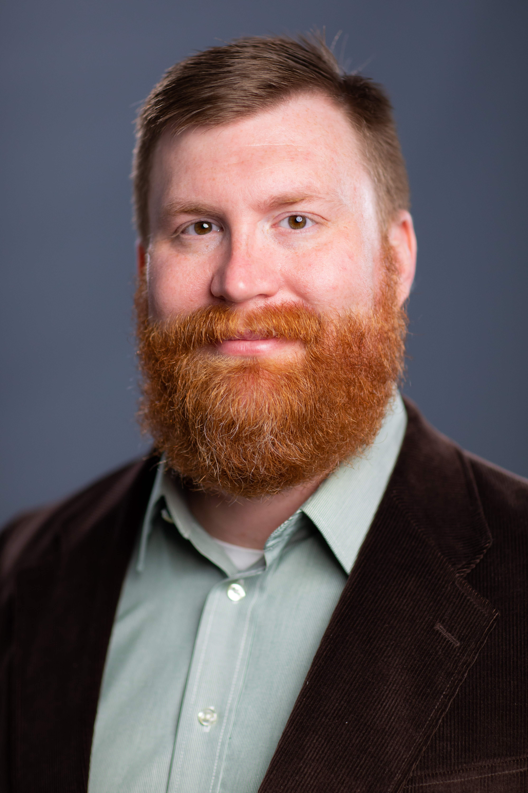
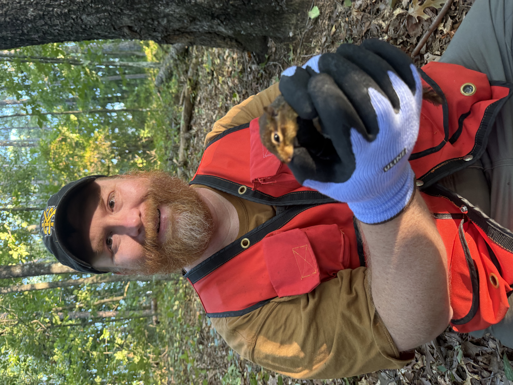
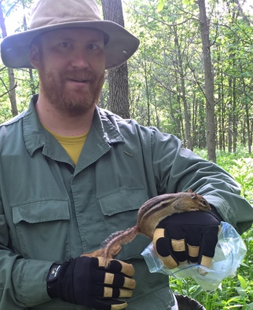

About
Background
My path to Kennesaw State has been somewhat non-traditional. Since completing my Ph.D. in 2012, I have been fortunate to work in government, industry, and academia. Those experiences have shaped both my research program and my philosophy of teaching. In my courses and advising I encourage students to appreciate the wide variety of careers available in biology and the unique perspectives that different sectors bring to scientific research.
Education

Baylor University
Ph.D. Biology (2012)
Advisor: Kenneth T. Wilkins
Dissertation
Effects of habitat affinities and resource needs on edge responses by small mammals.

University of Louisville
B.S. Biology (2006)
My undergraduate experience introduced me to ecological research and ultimately inspired me to pursue graduate school and a career in quantitative ecology.
Professional Experience

Associate Professor of Biology
Kennesaw State University
2025–Present
Research in quantitative ecology of animal populations.
- Advising undergraduate and graduate students.
- Statistical consulting and collaboration.
- Teaching Comparative Vertebrate Anatomy, Vertebrate Zoology, and Applied Biological Data Analysis.

Assistant Professor of Biology
Kennesaw State University
2020–2025
Established the Green Quantitative Ecology Laboratory and developed an externally funded research program in ecology and conservation.
Courses included Principles of Biology II Laboratory, Invertebrate Zoology, Comparative Vertebrate Anatomy, and Applied Biological Data Analysis.
Project Scientist
Waterborne Environmental, Inc.
2018–2020
Conducted ecological risk assessments for agricultural chemicals using population models, individual-based simulations, and toxicokinetic–toxicodynamic (TKTD) models.
Developed simulation software, analyzed large ecological datasets, and contributed to successful research proposals.
Applied Statistician (Senior)
The Climate Corporation
2017–2018
Developed statistical models supporting precision agriculture and collaborated with software engineers, statisticians, and agronomists to improve data-driven recommendations for growers.

Ecologist
U.S. Geological Survey
2013–2017
Developed statistical models for wildlife populations using Bayesian and frequentist methods, mark–recapture analyses, distance sampling, and stochastic simulation.
Designed and taught training courses in statistics and R, supervised field crews, and collaborated on research proposals and publications.